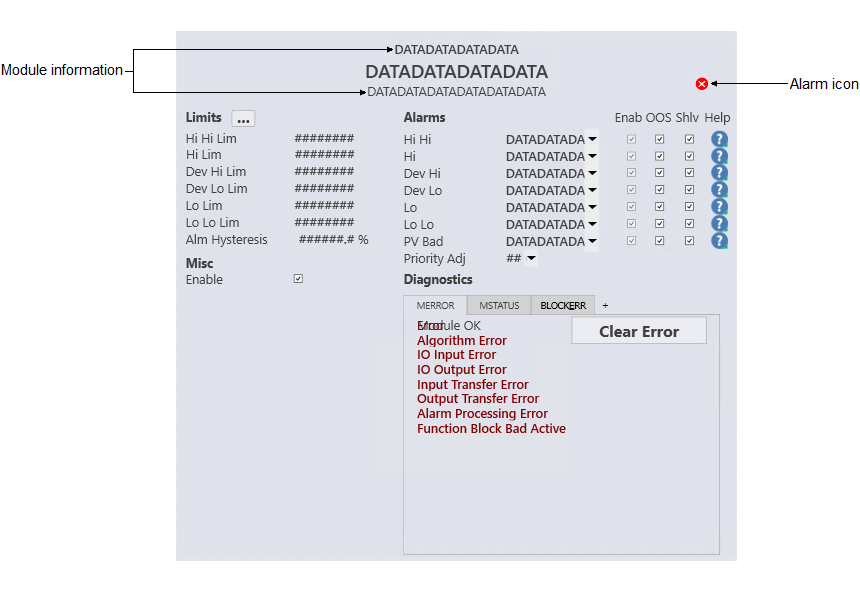

AALM_dt (Alarm module detail display)
Configuration view of the Alarm Module detail display
(AALM_dt)

The AALM_dt is used with the AALARM module template. The following sections describe the major components that are present on the ALLM_dt.
- Alarm icon
- Shows the highest priority alarm for that module. The following
table shows the alarm icon for each alarm priority and state.
Active acknowledged Active unacknowledged Inactive unacknowledged Suppressed Critical alarm 


Warning alarm 


Advisory alarm 

 Note: The suppressed alarm icon is visible only when no other active or unacknowledged alarms exist.
Note: The suppressed alarm icon is visible only when no other active or unacknowledged alarms exist.
Limits
- Hi Hi Lim
- The maximum value of the PV (in engineering units) before the High High Limit active bit (HI_HI_ACT) is set. Click this field to enter a new limit.
- Hi Lim
- The maximum value of the PV (in engineering units) before the High Limit active bit (HI_ACT) is set. Click this field to enter a new limit.
- Dev Hi Lim
- The maximum positive deviation of the PV from SP (in engineering units) before the High Deviation Limit active bit (DV_HI_ACT) is set. Click this field to enter a new limit.
- Dev Lo Lim
- The maximum negative deviation of the PV from SP (in engineering units) before the Low Deviation Limit active bit (DV_LO_ACT) is set. Click this field to enter a new limit.
- Lo Lim
- The minimum value of the PV (in engineering units) before the Low Limit active bit (LO_ACT) is set. Click this field to enter a new limit.
- Lo Lo Lim
- The minimum value of the PV (in engineering units) before the Low Limit active bit (LO_ACT) is set. Click this field to enter a new limit.
- Alm Hysteresis
- The alarm hysteresis (or deadband) value for the alarm conditions in % of OUT scale. Click this field to enter a new value. An alarm condition does not recur until the PV has backed away from the corresponding limit by at least the % of OUT Scale specified by this value.
Alarms
- Alarm label
- The alarm label configured for the alarm.
- Priority
- The alarm priority, such as Warning, Critical or Advisory, that is assigned to the corresponding alarm. Use the drop-down arrow to change the priority for that alarm while online.
- Priority Adj
- Use the drop-down arrow to decrease the alarm priority while online. If a module has more than one alarm configured, the alarm priorities are all reduced by the same value, except that the lowest priority that will be set is 3, a logged event. (For example, if a module has three alarms, configured with alarm priorities of 12, 8, and 5, and a priority adjustment of 5 is made, the online alarm priorities will be set to 7, 3, and 3, respectively.) The configurable alarm priority held in the PRI field of each alarm parameter remains unchanged. Therefore, setting the priority adjustment back to 0 reestablishes the original priority levels. (In the above example, the priorities are reestablished to 12, 8, and 5). Refer to the topic "The ALARMS parameter" for more information on the ALARMS parameter and to the and the "System alarm management" section for more information on alarm priorities.
- Enab check box (Enable)
- Indicates the corresponding alarm's ENAB (enabled) state. This checkbox is a read-only indication.
- OOS check box (Out of Service)
- Indicates whether the alarm is currently out of service.
- Shlv check box(Shelve)
- Indicates whether the alarm is currently shelved. Select this check box to shelve the corresponding alarm; deselect this check box to unshelve it.
- Help icon
- Indicates the type of Alarm Help available for the corresponding alarm. One of the following icons is visible on the faceplate:


Diagnostics
- Diagnostics table
- Shows any active conditions in the module's MERROR, MSTATUS, and BLOCK_ERR parameters. Each parameter has its own tab, and the parameter name is underlined on the tab when an active condition exists for that parameter. Click the parameter's tab to see its active conditions. When an error has occurred in the module, a Clear Error button appears on the MERROR tab. Click this button to clear all active errors.